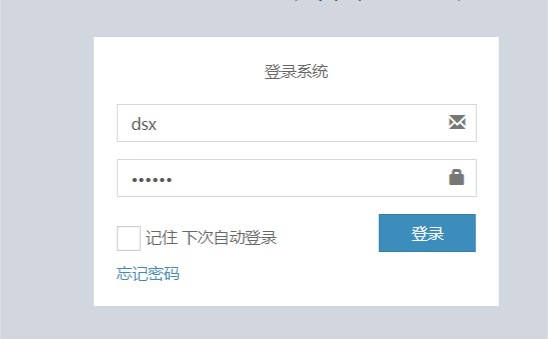
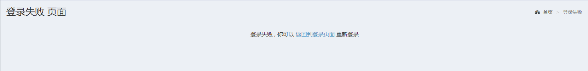
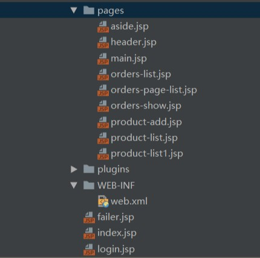
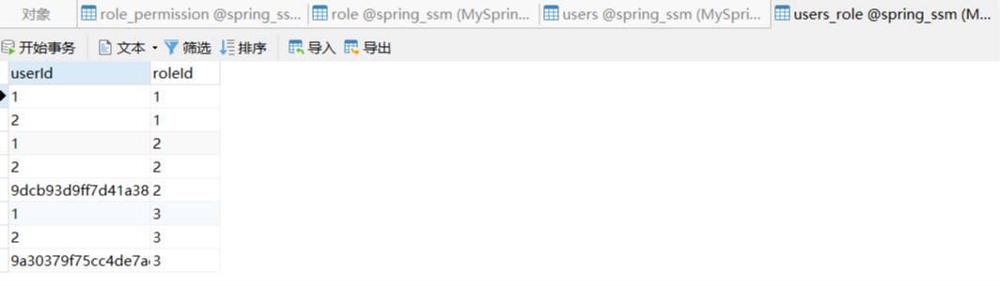
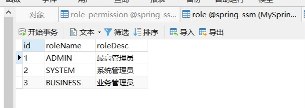

Spring-Security 登录失败，无法跳转到指定页面
前言：在进行 SSM 整合的学习时，发现使用 Spring-Security 框架自定义登录界面后无法登录成功，这个 BUG 有点意思，从下午折磨我到晚上，洗澡都还在想是哪方面出了问题，最后刚刚醒悟，终于找出了 BUG 是出现在 db.properties 里面
简单介绍下 spring-securuty
- 这个框架是用来给登录时提供安全服务的
- 提供“认证”，“授权”操作
- “认证”指的是登录时进行一个校验
- “授权”指的是判断用户是否有权限进行登录
问题缘由
在编码登录模块的时候，使用 Spring-Security 框架自定义登录界面后，登录总是不成功，总是跳转到登录失败的界面，，一次次比对 sql 语句，数据库中的表信息，还有 spring-security 的配置信息，发现还是没有问题。但还是出现登录失败的情况


问题分析：
第一步，检查 spring-security.xml 的配置文件，检查跳转界面的语句
spring-security.xml
<?xml version="1.0" encoding="UTF-8"?>
<beans xmlns="http://www.springframework.org/schema/beans"
xmlns:security="http://www.springframework.org/schema/security"
xmlns:xsi="http://www.w3.org/2001/XMLSchema-instance"
xsi:schemaLocation="http://www.springframework.org/schema/beans
http://www.springframework.org/schema/beans/spring-beans.xsd
http://www.springframework.org/schema/security
http://www.springframework.org/schema/security/spring-security.xsd">
<!-- 配置不拦截的资源 -->
<security:http pattern="/login.jsp" security="none"/>
<security:http pattern="/failer.jsp" security="none"/>
<security:http pattern="/css/**" security="none"/>
<security:http pattern="/img/**" security="none"/>
<security:http pattern="/plugins/**" security="none"/>
<!--
配置具体的规则
auto-config="true" 不用自己编写登录的页面，框架提供默认登录页面
use-expressions="false" 是否使用SPEL表达式
-->
<security:http auto-config="true" use-expressions="false">
<!-- 配置具体的拦截的规则 pattern="请求路径的规则" access="访问系统的人，必须有ROLE_USER的角色" -->
<security:intercept-url pattern="/**" access="ROLE_USER,ROLE_ADMIN"/>
<!-- 定义跳转的具体的页面 -->
<security:form-login
<!-- 登录界面 -->
login-page="/login.jsp"
<!-- login.do 是因为用了 spring-mvc 的dispatcherServlet -->
login-processing-url="/login.do"
default-target-url="/index.jsp"
<!-- 失败后的界面 -->
authentication-failure-url="/failer.jsp"
<!-- 成功后的跳转界面 -->
authentication-success-forward-url="/pages/main.jsp"
/>
<!-- 关闭跨域请求 -->
<security:csrf disabled="true"/>
<!-- 退出 -->
<security:logout invalidate-session="true" logout-url="/logout.do" logout-success-url="/login.jsp" />
</security:http>
<!-- 切换成数据库中的用户名和密码 -->
<security:authentication-manager>
<security:authentication-provider user-service-ref="userService">
<!-- 配置加密的方式
<security:password-encoder ref="passwordEncoder"/>-->
</security:authentication-provider>
</security:authentication-manager>
<!-- 配置加密类 -->
<bean id="passwordEncoder" class="org.springframework.security.crypto.bcrypt.BCryptPasswordEncoder"/>
</beans>
附上页面目录图

发现没有问题，检查下一项。
检查 Service 的实现类
UserServiceImpl.java
package com.ssm.service.impl;
import com.ssm.dao.IUserDao;
import com.ssm.domain.Role;
import com.ssm.domain.UserInfo;
import com.ssm.service.IUserService;
import org.springframework.beans.factory.annotation.Autowired;
import org.springframework.security.core.authority.SimpleGrantedAuthority;
import org.springframework.security.core.userdetails.User;
import org.springframework.security.core.userdetails.UserDetails;
import org.springframework.security.core.userdetails.UsernameNotFoundException;
import org.springframework.stereotype.Service;
import org.springframework.transaction.annotation.Transactional;
import java.util.ArrayList;
import java.util.List;
/**
* @author XiaoXin
* @title: UserServiceImpl
* @projectName xiaoxin_ssm
* @description: TODO
* @date 2020/4/11 14:49
*/
@Service("userService")
@Transactional
public class UserServiceImpl implements IUserService {
@Autowired
private IUserDao userDao;
@Override
public UserDetails loadUserByUsername(String username) throws UsernameNotFoundException {
UserInfo userInfo = null;
try {
userInfo = userDao.findByUsername(username);
} catch (Exception e) {
e.printStackTrace();
}
//处理自己的用户对象封装成 UserDetails
User user = new User(userInfo.getUsername(), "{noop}" + userInfo.getPassword(), userInfo.getStatus() == 0 ? false : true, true, true, true, getAuthority(userInfo.getRoles()));
return user;
}
//作用就是返回一个List集合，集合中装入的是角色描述
public List<SimpleGrantedAuthority> getAuthority(List<Role> roles) {
List<SimpleGrantedAuthority> list = new ArrayList<>();
for (Role role : roles) {
list.add(new SimpleGrantedAuthority("ROLE_" + role.getRoleName()));
}
return list;
}
}
注释的名字 @Service(“userService”) 与 spring-security.xml 中的
<security:authentication-provider user-service-ref=”userService”> 对的上，没有问题
进一步检查，是否因为用户没有权限进行登录。


核实 getAuthority 方法里权限名是否有误。
public List<SimpleGrantedAuthority> getAuthority(List<Role> roles) {
List<SimpleGrantedAuthority> list = new ArrayList<>();
for (Role role : roles) {
list.add(new SimpleGrantedAuthority("ROLE_" + role.getRoleName()));
}
return list;
}检查无误后，开始检查 Dao 层的 sql 查询语句
IUserDao.java
package com.ssm.dao;
import com.ssm.domain.UserInfo;
import org.apache.ibatis.annotations.Many;
import org.apache.ibatis.annotations.Result;
import org.apache.ibatis.annotations.Results;
import org.apache.ibatis.annotations.Select;
public interface IUserDao {
@Select("select * from users where username=#{username}")
@Results({
@Result(id = true, property = "id", column = "id"),
@Result(property = "username", column = "username"),
@Result(property = "email", column = "email"),
@Result(property = "password", column = "password"),
@Result(property = "phoneNum", column = "phoneNum"),
@Result(property = "status", column = "status"),
@Result(property = "roles",column = "id",javaType = java.util.List.class,many = @Many(select = "com.ssm.dao.IRoleDao.findRoleByUserId"))
})
public UserInfo findByUsername(String username) throws Exception;
}
IRoleDao.java
package com.ssm.dao;
import com.ssm.domain.Role;
import org.apache.ibatis.annotations.Select;
import java.util.List;
/**
* @author XiaoXin
* @title: IRoleDao
* @projectName xiaoxin_ssm
* @description: TODO
* @date 2020/4/11 17:00
*/
public interface IRoleDao {
//根据用户 id 查询出所有对应的角色
@Select("select * from role where id in (select roleId from users_role where userId=#{userId})")
public List<Role> findRoleByUserId(String userId) throws Exception;
}
还是没发现问题
解决方案：
最终修改 db.properity 文件
jdbc.driver=com.mysql.jdbc.Driver
jdbc.url=jdbc:mysql://localhost:3306/spring_ssm?serverTimezone=Asia/Shanghai&characterEncoding=utf-8&useSSL=true&useUnicode=true
jdbc.username=root
jdbc.password=123往 url 里面多加了一段
&useSSL=true&useUnicode=true残留疑惑：
经过反复的测试用例，将 useSSL 和 useUnicode 的值设置成不同，然后进行组合，再重新登录，发现都是可以的。不知道是不是 log4j 日志文件记录了成功的信息，导致不加这两个参数都是可以成功登录的。后期会对 useSSL 和 useUnicode 进行学习